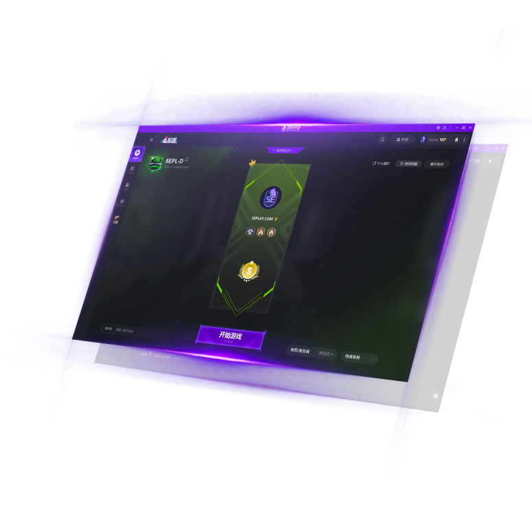

5EPlay这几年：从开黑平台到生态闭环的迭代观察
从 Rating+ 评分优化到赛事体系四层金字塔，从实名认证到 5E BOX——5EPlay 在迭代中逐渐从一个对战匹配工具长成一套服务玩家全链路的生态。
现在打开5EPlay官网提供的客户端，你看到的已经不只是一个"找人开黑"的匹配大厅了。左侧导航栏的排列耐人寻味：匹配、赛事、数据中心、5E BOX、APP 联动——每个入口背后都是几个版本迭代堆出来的功能层。我最近注意到 2026 S1 对 Rating+ 评分体系的那次调整，官方文案写得很直白："承担突破职责的玩家，主动拉枪线让队友补枪，却拿不到匹配其真实贡献的评价"。这件事让我想回头看看，5EPlay 这几年到底是怎么一步步长成现在这个样子的。
现在这版是什么样
2026 年的 5EPlay，核心产品形态是三个终端：PC 客户端（可从官方下载获取）、网页数据中心、手机 APP，三者账号同源、数据互通。功能上大致可以分成四块：
匹配与排位是基础盘，匹配模式覆盖从普通休闲到 5EPL 联赛的完整梯度，排位结果与 Rating+、5E Swing Score 两套评分挂钩。2026 S1 的 Rating+ 优化是这个板块最近一次比较大的动作——突破手、拉枪线、空间创造这些此前被忽略的团队贡献终于被计入评分维度。
赛事体系是最能看出野心的部分。平台自己把赛事分成四层：职业级的 5EPL、平台级的 5EPC、全民级的月赛和城市级的线下挑战赛。2026 秋季赛的城市挑战赛搞了"多城开战"，线下赛点覆盖好几个城市，这是纯线上赛事走向线下的明显信号。
数据与工具包括 Demo 下载、网页数据中心、5E BOX（准星、雷达皮肤、一键优化）这些辅助产品。手机 APP 则把数据查询、赛事观赛、好友社交搬到了移动端。
账号与安全是被很多玩家低估的一层。实名认证（一张身份证最多绑三个账号）、信用分、受信账户、VAC 封禁联动、"一日作弊终身封禁"的 5EPL 规则——这套体系构成了 5EPlay 的绿色环境底线。
它从哪起步——样本文档没写的那些年
我从5EPlay文档里找到的版本样本，最早提到的节点是 2025 S1——Rating+ 在那时候上线。更早期的历史文档里找不到，但从功能的堆叠顺序大致能反推几个关键转折点：
第一阶段，纯匹配工具。这是所有对战平台的起点——能开房间、能匹配、能记录战绩。这一阶段的产品逻辑很简单：把 CS 玩家聚到一起，让他们能方便地找到对手和队友。样本文档里没有描述这个阶段，但账号注册流程的设计里还能看到它的影子——手机号注册 + Steam 绑定，两步走完就能上手，没有多余的门槛。
第二阶段，反作弊与账号体系补课。实名认证的引入是这个阶段的标志性事件。一张身份证最多三个账号、人脸识别（官方明确说不存储人脸信息）、出借人脸等于送账号——这些规则不是一天想出来的，是反作弊团队在和作弊团伙的拉锯中逐步收紧的。"一日作弊终身封禁"的 5EPL 规则就是在处理"借尸还魂"行为后发出的公告。
第三阶段，数据产品化。Rating+ 和 5E Swing Score 的上线是这个阶段的核心。传统的 K/D 和单一 Rating 确实粗糙——一个突破手吃了半局伤害、给队友创造了输出空间，但自己没怎么收人头，赛后评分就是上不去。Rating+ 上线时官方的定位是"综合评分体系"，用来替代单一 Rating；2026 S1 的优化则是这个思路的延续——继续往"立体还原真实贡献"这个方向走，把团队价值维度的权重再往上调。
第四阶段，赛事生态化。5EPL 不是突然冒出来的，它的前身应该是平台早期的排位榜单。当一批玩家的水平稳定在某个阈值之上，"排位榜"就自然演化成了"职业联赛"。然后是 5EPC（为国内队伍创造机会）、全民杯（低门槛）、城市挑战赛（线下）——四层金字塔结构就这样搭起来。2026 秋季赛城市挑战赛的线下赛点，是这个塔尖伸到地面的第一个标志。
样本文档里没有 2024 年及更早的版本信息，这本身就能说明一些事——官方文档只记录"现在还在用"的功能和最近的迭代，已经被替代的早期产品不会再被提起。这也意味着 5EPlay 的迭代是比较激进的：有了更好的方案就换，不纠结历史包袱。
从迭代节奏看团队的优先级
把散落的版本节点串起来看，5EPlay 的迭代有两个很明显的主线：
第一条线：死磕"公平竞技"的底层逻辑。反作弊（实名认证、人脸识别、VAC 联动）和评分体系（Rating+、5ESS、2026 S1 优化）其实是一件事的两面——前者保证"不作弊"，后者保证"评得准"。你很少看到 5EPlay 把资源投在"换皮"或"加个表情系统"这种轻量功能上，它的大版本更新几乎都落在"让对局更公平、让数据更可信"这个核心命题上。
第二条线：从"对战"延伸到"生态"。赛事体系的四层结构、5E BOX 的工具链、网页数据中心 + 手机 APP 的多终端覆盖——这些都是在"能匹配"之后，围绕玩家在对战前、对战中、对战后、观赛时、社交时的完整链路补功能。特别是赛事这一层，从线上排榜到线下赛点，说明团队不满足于只做一个"平台"，而是想做一个"生态"。
有一件事值得注意：样本文档里没有提到 5EPlay 的商业模式迭代——会员怎么算、5E BOX 怎么收费、赛事奖金谁出——这些信息不在平台自己的文档里，可能是因为那是另一个维度的故事了。
照这个路线，下一步大概率怎么走
从已有的迭代规律推的话，我觉得有两个方向值得关注：
一是 Rating+ 评分体系的持续细化。2026 S1 刚优化了突破手的评分，下一次迭代可能会把更多位置的贡献纳入考量——比如自由人的残局决策、狙击手的地图控制范围。官方说过"评分逻辑持续迭代中，将继续收集社区反馈完善"，这不像一句套话，因为他们已经做了一次针对具体场景的优化。
二是赛事体系的线下延伸。城市挑战赛 2026 秋季赛刚搞了多城开战，如果效果好，后续可能会有更多线下赛点、更大规模的跨城联动。线下赛事一旦跑起来，和地方网吧、高校电竞社的合作就有了基础——这是线上对战平台很难直接触达的人群。
至于 APP 功能的扩展、5E BOX 的新工具、新匹配模式这些，属于常规迭代的范畴，不用等大版本就能拿到。真正决定 5EPlay 下一个阶段形态的，还是反作弊技术能走多远、赛事生态能铺多大这两件事。

写这篇东西的过程中，我时不时会回去看样本文档里 Rating+ 那篇的开头——"2025 S1 上线，2026 S1 优化"，一句话带过了一整年。但把这件事放在整个迭代时间轴上看，它代表的是 5EPlay 团队在"如何量化玩家价值"这个问题上的一次明确立场转变：从"看谁杀得多"到"看谁贡献大"。这种转变才是迭代里最有意思的部分，而不是某个功能加没加。